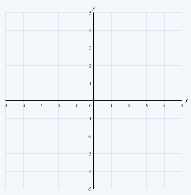
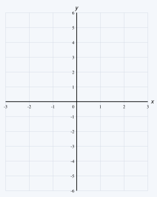
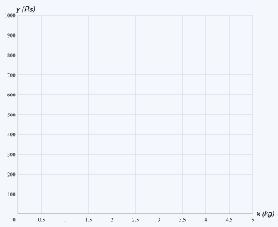
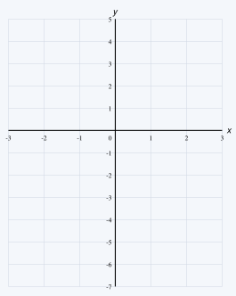
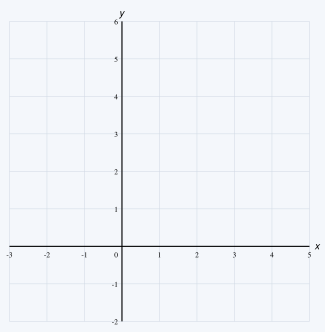
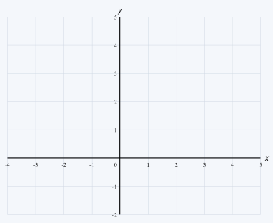
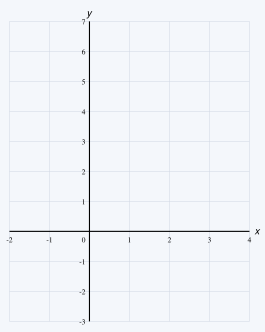

Instructions: Answer all questions. Show all your working. Draw the graphs neatly on the coordinate planes given.
A and B are two points on a coordinate plane, where A = (−3, −2) and B = (3, −2).
(i) Mark the points A and B on the coordinate plane given below.
(ii) Mark the points C and D such that ABCD is a square lying above AB. Write the coordinates of C and D.
(iii) Write the equation of each side AB, BC, CD and DA of the square.
(iv) Write the equations of the two axes of symmetry of the square that are parallel to the x-axis and the y-axis.

An incomplete table of values prepared to draw the graph of the function y = 2x is given below.
| x | −2 | −1 | 0 | 1 | 2 |
|---|---|---|---|---|---|
| y | −4 | ...... | 0 | ...... | 4 |
(i) Fill in the blanks in the table.
(ii) Draw the graph of y = 2x on the coordinate plane given below.
(iii) Using the graph, find the value of y when x = 1.5.
(iv) Using the graph, find the value of x when y = −3.
(v) Does the point (−1, 2) lie on this graph? Give a reason for your answer.

The price of 1 kg of rice is Rs 200. Take the amount of rice (in kg) as x and its price (in rupees) as y.
(i) Write the relationship between x and y as a function.
(ii) Copy and complete the table of values below.
| Rice (kg) x | 1 | 2 | 3 | 4 |
|---|---|---|---|---|
| Price (Rs) y | ...... | ...... | ...... | ...... |
(iii) Draw the graph of the function on the grid given below.
(iv) Using the graph, find the price of 2.5 kg of rice.
(v) Using the graph, find how many kilograms of rice can be bought for Rs 700.

An incomplete table of values prepared to draw the graph of the function y = 2x − 1 is given below.
| x | −2 | −1 | 0 | 1 | 2 |
|---|---|---|---|---|---|
| y | −5 | ...... | −1 | ...... | 3 |
(i) Fill in the blanks in the table.
(ii) Draw the graph of the function on the coordinate plane given below.
(iii) Write the gradient and the intercept of the graph.
(iv) If the point (4, k) lies on this line, find the value of k.
(v) Write the equation of the straight line which is parallel to the line drawn in (ii) and passes through the point (0, 2).

An incomplete table of values prepared to draw the graph of the function y = −x + 3 is given below.
| x | −2 | −1 | 0 | 1 | 2 | 3 | 4 |
|---|---|---|---|---|---|---|---|
| y | 5 | ...... | 3 | ...... | 1 | ...... | −1 |
(i) Fill in the blanks in the table.
(ii) Draw the graph of the function on the coordinate plane given below.
(iii) Write the intercept of the graph and the coordinates of the point where it meets the x-axis.
(iv) Using the graph, find the value of y when x = 1.5, and the value of x when y = 4.
(v) Is the angle that the graph makes counterclockwise with the positive direction of the x-axis acute or obtuse? Give a reason.

Answer this question without drawing the graphs. The equations of six straight lines are given below.
(a) y = 3x + 2 (b) y = −2x + 5 (c) y = ½x − 4
(d) 2y = 4x + 6 (e) y + 3x = 1 (f) y = 3x − 1
(i) Write the equations (d) and (e) in the form y = mx + c.
(ii) Write the gradient and the intercept of each straight line.
(iii) For each line, state whether it makes an acute angle or an obtuse angle counterclockwise with the positive direction of the x-axis.
(iv) Which two of these lines are parallel to each other? Give a reason.
Write the equation of each straight line described below in the form y = mx + c.
(i) Gradient = 3 and intercept = −2.
(ii) Gradient = −1 and intercept = 4.
(iii) Parallel to the line y = 2x + 5 and with intercept −3.
(iv) Passes through the origin and the point (2, 6).
(v) Passes through the points (0, 1) and (2, 5).
Consider the straight line given by the equation 2x + 3y = 6.
(i) Write the equation in the form y = mx + c.
(ii) Write the gradient and the intercept of the line.
(iii) Find the coordinates of the points where the line meets the x-axis and the y-axis.
(iv) Using the two points found in (iii), draw the graph of the line on the coordinate plane given below.
(v) Show that the point (−3, 4) lies on this line.

Incomplete tables of values prepared to draw the graphs of the functions y = x + 1 and y = −2x + 4 are given below.
y = x + 1
| x | −1 | 0 | 1 | 2 | 3 |
|---|---|---|---|---|---|
| y | 0 | ...... | 2 | ...... | 4 |
y = −2x + 4
| x | −1 | 0 | 1 | 2 | 3 |
|---|---|---|---|---|---|
| y | 6 | ...... | 2 | ...... | −2 |
(i) Fill in the blanks in both tables.
(ii) Draw both graphs on the same coordinate plane given below.
(iii) Write the gradient and the intercept of each graph.
(iv) Write the coordinates of the point where the two lines intersect.
(v) Using your answer to (iv), write the value of x for which x + 1 = −2x + 4.
